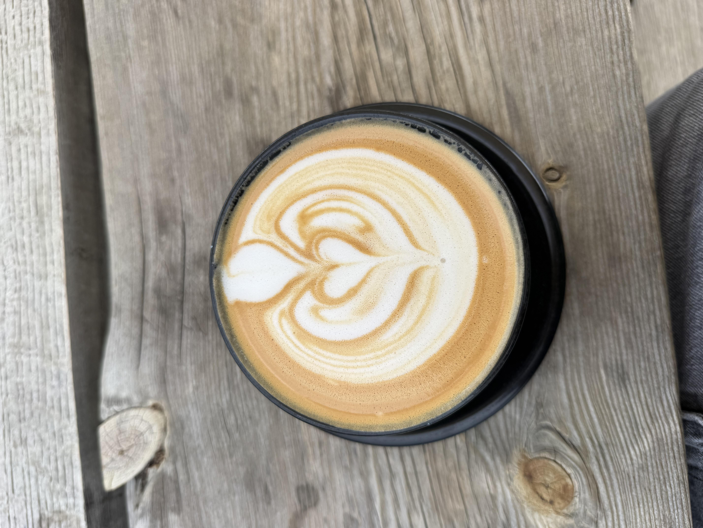

SELENA DRINKS COFFEE
I drink lots of coffee, and now you get to read all about it!

What to Expect!!!
I love spending all my money on overpriced coffee and visiting new coffee shops. This will be all my unsolicited opinions of all the coffee shops I visit.
I live in Seattle, so the contents of the blog will primarily contain coffee shops local to me. However, when I occasionally muster up enough time and money to go somewhere new, I'll make sure to include that too.
There will be state navigation in the sidebar to see everywhere else I go (although it's much more limited as of right now, hoping to grow that).
My go-to coffee is a Lavender Latte with almond milk, but I also love a good seasonal drink.
I typically review a coffee shop on atmosphere, coffee, whether it's a good study/work spot, and price. If I choose to indulge in a pastry or food, I'll be sure to include that as well!
Give me a Recommendation!
Is there somewhere you want me to try? Let me knowby filling out this form and I'll be sure to make my way over!
Recommend a Coffee Shop →